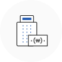

사업개요


 사업성과 기술성이 우수한 성장유망 중소기업의 생산성 향상, 고부가가치화 등 경쟁력 강화에 필요한 자금을 지원하여 성장동력을 창출하는 사업입니다.
지원대상
사업실패로 한국신용정보원의 “일반신용정보관리규약”에 따라 ‘연체 등’ 신용도 판단정보 및‘공공정보’의 정보가 등재(등록 및 해제 사실)되어 있거나 저신용자로 분류된 기업인 또는 사업실패로 자금조달에 애로를 겪는 기업인 중 다음 요건을 모두 충족한 자
* 신용미회복자는 신용회복(신복위)승인, 변제계획인가(개인회생), 파산면책결정, 한국자산관리공사 채무조정의 경우 등을 통해 ‘연체 등’의 정보가 해제된 경우 지원결정 가능
* <2.공통사항> 바. 융자제한기업 중 ①항, ②항, ⑦항 적용에서 제외(단, ①항은 세금체납 처분 유예에 한함, ②항 중 금융질서문란, 청산절차 등록기업은 융자제한)
1
아래 재창업자 범위와 요건에 해당하고, 실패 사업체의 폐업을 완료할 것
* (재창업자 범위) 실패 개인기업 대표자, 실패 법인기업 대표이사·경영실권자
* (재창업자 요건) 실패기업의 업종이 ‘비영리업종, 사치향락업종, 음식숙박업, 상시근로자 5인 미만 소매업, 금융 및 보험업, 부동산업, 공공행정, 국방및사회보장행정,
가구내 고용 및 자가 소비생산활동, 국제 및 외국기관’이 아니며, 영업실적을 보유할 것.(기 재창업 후 영업실적이 있는 경우 또는 폐업 기업의 업력이 3년 이상인 경우는 영업실적
보유 요건 면제)
2재창업을 준비 중인 자 또는 재창업일로부터 7년 미만인 자
* 설립 7년 미만 법인기업을 인수한 경우도 포함
3재창업을 준비 중인 자의 경우는 재창업자금 지원결정 후 3개월 이내에 사업자등록이 가능할 것
4「중소기업창업 지원법」제4조의3제4항의 규정에 따른 성실경영 평가를 통과할 것
* 성실경영 평가 : 재창업자금 신청자가 재창업 전 기업을 분식회계, 고의부도, 부당해고 등을 하지 않고 성실하게 경영했는지 등을 평가
5신용미회복자(신용회 복절차가 정상적으로 진행 중인 경우 제외)는 총부채규모가 30억원 이하일 것
* 다음 기술혁신형재창업 및 신용회복위원회 재창업지원자금 별도 운용
기술혁신형 재창업
- 재창업한 기업으로 정부의 R&D사업 등에 참여하고 있는 자
- 중기부 재도전 성공패키지사업 또는 과기부 ICT 재창업 사업 참여
- 재도전 Fund를 투자받은 재창업자
- 특허·실용신안 보유하고 재창업 후 동 기술 사업화 중이거나 사업 예정인 자
- 혁신성장분야(별표3) 업종 영위자
- 소재·부품 산업(별표5) 업종 영위자
신용회복위원회 재창업지원
- 신용미회복자로 중진공, 신보, 기보 등이 기업평가 후 신용회복위원회가 운영하는 ‘재창업지원 위원회’ 심의를 통해 채무조정 여부 및 융자결정
(모든 채무가 조정되어 ‘연체 등’의 정보가 해제된 경우에 한함)
지원내용
- 대출금리(기준금리) : 정책자금 기준금리(변동)
-
융자방식 : 중소벤처기업진흥공단 직접대출 또는 금융회사 대리대출
* 신용회복위원회 재창업지원, 기술혁신형재창업자금 중 융자상환금 조정형은 직접대출
-
대출한도 : 융자계획공고 2.공통사항의 ‘개별기업당 융자한도’ (운전자금은 연간 5억원 이내)
* 단, 수출향상기업(최근 1년간 직수출실적 50만불 이상이며 20% 이상 증가), 최근 1년간 10인 이상 고용창출 기업, 최근 1년간 10억원 이상 시설투자기업(금회 포함)의 운전자금은 연간 10억원 이내
* 재창업자금 중 융자상환금 조정형 대출의 경우 기업당 5억원 이내 - 시설자금 : 10년 이내(거치기간 4년 이내 포함)
- 운전자금 : 6년 이내(거치기간 3년 이내 포함)
- 지원범위 : 사업에 소요되는 시설(생산설비, 사업장 건축자금, 사업장 확보자금 등) 및 운전자금
지원절차
- 정책자금 융자 절차를 따르되, 신용회복위원회재창업과 1년 미만 초기 재창업자는 심의위원회를 통해 융자결정
융자상담처
더욱 자세한 상담은 전국에 위치한 중진공 각 지역본(지)부로 문의하여 주시기 바랍니다.